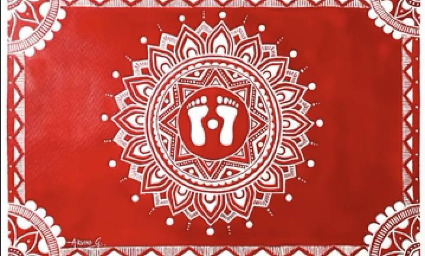

Aipan art feels like devotion drawn with simplicity and care. The red background with delicate white patterns creates a striking contrast, yet the overall feeling is calm and sacred. The romance here is ritualistic and heartfelt. These designs are not made for decoration alone—they are created with intention, during important moments of life. Every line reflects a prayer, a hope, or a blessing. It’s a quiet expression of faith, tradition, and cultural identity.
Aipan art originates from the Kumaon region of Uttarakhand. • Traditionally made during festivals, rituals, and ceremonies • Closely associated with Hindu religious practices • Designs are drawn at entrances, floors, and पूजा spaces Common forms include: • Lakshmi Chowki (for prosperity) • Saraswati Chowki (for education) It is similar in concept to rangoli but has its own unique identity and symbolism.
Aipan art is known for its simplicity and precision: • Red Background (Geru) Made using red मिट्टी (earth pigment) • White Patterns (Rice Paste) Drawn using fingers or cloth • Geometric & Symbolic Designs Patterns represent prosperity, protection, and divinity • Freehand Drawing No tools—requires skill and practice • Symmetry & Balance Designs are carefully structured
Aipan art is traditionally practiced by women of Uttarakhand households. • Passed from mother to daughter • Created as part of daily and ritual life • Not commercial originally—purely cultural and spiritual Today, it is being adapted into modern designs and crafts.